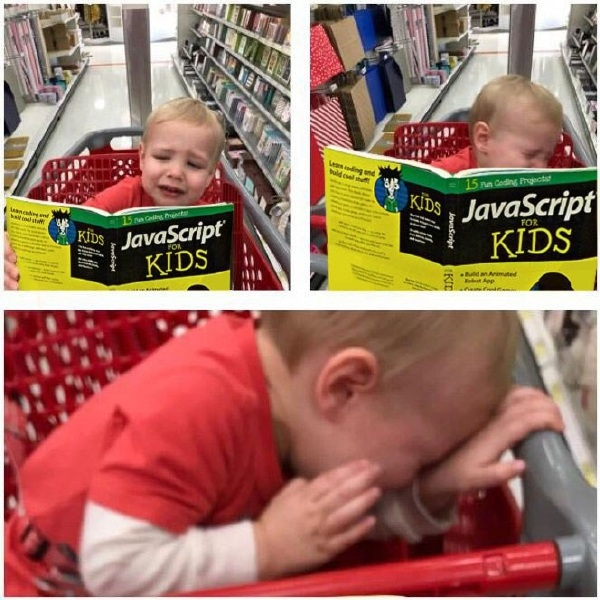
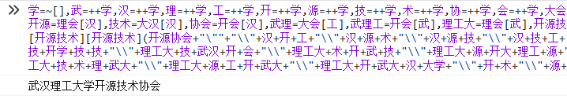
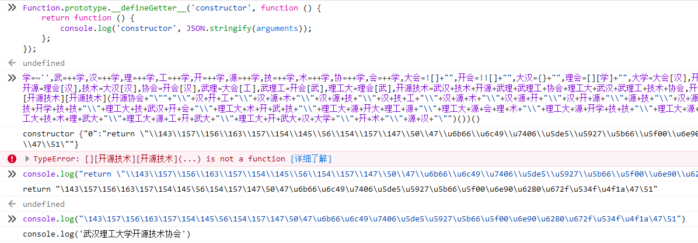

写在前面
当年刚上大一的时候，我在某微信公众号上读过一篇标题为《史上最奇葩的十大编程语言》的文章，对其中介绍的 Brainfuck 和 Ook!印象尤其深刻。后来接触到JSFuck、JJEncode、AAEncode，更是大感奇妙。这几种编码既可以用于前端代码混淆，也可以用于 XSS 攻击，最重要的是它们很好玩。
昨天下午，我正坐在工位上美滋滋地吃着公司的下午茶，突然看到了一篇解析JSFuck原理的文章 （博主说要写一个系列的文章结果太监了），顿时来了兴趣，产生了自己搞一种混淆编码的冲动。下班之后，我蹭着公司的网又查了一些资料，总算搞懂了这些有趣的混淆编码的原理，然后实现了自己的 WHUTOSA_Encode。
AAEncode示例
如果你对这类混淆编码不了解，当你第一次见到下面这段“代码”，估计会有点懵：
ﾟωﾟﾉ= /｀ｍ´）ﾉ ~┻━┻ //*´∇｀*/ ['_']; o=(ﾟｰﾟ) =_=3; c=(ﾟΘﾟ) =(ﾟｰﾟ)-(ﾟｰﾟ); (ﾟДﾟ) =(ﾟΘﾟ)= (o^_^o)/ (o^_^o);(ﾟДﾟ)={ﾟΘﾟ: '_' ,ﾟωﾟﾉ : ((ﾟωﾟﾉ==3) +'_') [ﾟΘﾟ] ,ﾟｰﾟﾉ :(ﾟωﾟﾉ+ '_')[o^_^o -(ﾟΘﾟ)] ,ﾟДﾟﾉ:((ﾟｰﾟ==3) +'_')[ﾟｰﾟ] }; (ﾟДﾟ) [ﾟΘﾟ] =((ﾟωﾟﾉ==3) +'_') [c^_^o];(ﾟДﾟ) ['c'] = ((ﾟДﾟ)+'_') [ (ﾟｰﾟ)+(ﾟｰﾟ)-(ﾟΘﾟ) ];(ﾟДﾟ) ['o'] = ((ﾟДﾟ)+'_') [ﾟΘﾟ];(ﾟoﾟ)=(ﾟДﾟ) ['c']+(ﾟДﾟ) ['o']+(ﾟωﾟﾉ +'_')[ﾟΘﾟ]+ ((ﾟωﾟﾉ==3) +'_') [ﾟｰﾟ] + ((ﾟДﾟ) +'_') [(ﾟｰﾟ)+(ﾟｰﾟ)]+ ((ﾟｰﾟ==3) +'_') [ﾟΘﾟ]+((ﾟｰﾟ==3) +'_') [(ﾟｰﾟ) - (ﾟΘﾟ)]+(ﾟДﾟ) ['c']+((ﾟДﾟ)+'_') [(ﾟｰﾟ)+(ﾟｰﾟ)]+ (ﾟДﾟ) ['o']+((ﾟｰﾟ==3) +'_') [ﾟΘﾟ];(ﾟДﾟ) ['_'] =(o^_^o) [ﾟoﾟ] [ﾟoﾟ];(ﾟεﾟ)=((ﾟｰﾟ==3) +'_') [ﾟΘﾟ]+ (ﾟДﾟ) .ﾟДﾟﾉ+((ﾟДﾟ)+'_') [(ﾟｰﾟ) + (ﾟｰﾟ)]+((ﾟｰﾟ==3) +'_') [o^_^o -ﾟΘﾟ]+((ﾟｰﾟ==3) +'_') [ﾟΘﾟ]+ (ﾟωﾟﾉ +'_') [ﾟΘﾟ]; (ﾟｰﾟ)+=(ﾟΘﾟ); (ﾟДﾟ)[ﾟεﾟ]='\\'; (ﾟДﾟ).ﾟΘﾟﾉ=(ﾟДﾟ+ ﾟｰﾟ)[o^_^o -(ﾟΘﾟ)];(oﾟｰﾟo)=(ﾟωﾟﾉ +'_')[c^_^o];(ﾟДﾟ) [ﾟoﾟ]='\"';(ﾟДﾟ) ['_'] ( (ﾟДﾟ) ['_'] (ﾟεﾟ+(ﾟДﾟ)[ﾟoﾟ]+ (ﾟДﾟ)[ﾟεﾟ]+(ﾟΘﾟ)+ (ﾟｰﾟ)+ (o^_^o)+ (ﾟДﾟ)[ﾟεﾟ]+(ﾟΘﾟ)+ ((ﾟｰﾟ) + (ﾟΘﾟ))+ ((ﾟｰﾟ) + (o^_^o))+ (ﾟДﾟ)[ﾟεﾟ]+(ﾟΘﾟ)+ ((ﾟｰﾟ) + (ﾟΘﾟ))+ ((o^_^o) +(o^_^o))+ (ﾟДﾟ)[ﾟεﾟ]+(ﾟΘﾟ)+ ((o^_^o) +(o^_^o))+ (o^_^o)+ (ﾟДﾟ)[ﾟεﾟ]+(ﾟΘﾟ)+ ((ﾟｰﾟ) + (ﾟΘﾟ))+ ((ﾟｰﾟ) + (o^_^o))+ (ﾟДﾟ)[ﾟεﾟ]+(ﾟΘﾟ)+ ((ﾟｰﾟ) + (ﾟΘﾟ))+ (ﾟｰﾟ)+ (ﾟДﾟ)[ﾟεﾟ]+(ﾟΘﾟ)+ (ﾟｰﾟ)+ ((ﾟｰﾟ) + (ﾟΘﾟ))+ (ﾟДﾟ)[ﾟεﾟ]+((ﾟｰﾟ) + (ﾟΘﾟ))+ ((o^_^o) +(o^_^o))+ (ﾟДﾟ)[ﾟεﾟ]+(ﾟΘﾟ)+ ((ﾟｰﾟ) + (ﾟΘﾟ))+ (ﾟｰﾟ)+ (ﾟДﾟ)[ﾟεﾟ]+(ﾟΘﾟ)+ ((ﾟｰﾟ) + (ﾟΘﾟ))+ ((ﾟｰﾟ) + (o^_^o))+ (ﾟДﾟ)[ﾟεﾟ]+(ﾟΘﾟ)+ (ﾟｰﾟ)+ ((ﾟｰﾟ) + (o^_^o))+ (ﾟДﾟ)[ﾟεﾟ]+((ﾟｰﾟ) + (ﾟΘﾟ))+ (c^_^o)+ (ﾟДﾟ)[ﾟεﾟ]+(ﾟｰﾟ)+ ((o^_^o) - (ﾟΘﾟ))+ (ﾟДﾟ)[ﾟεﾟ]+(oﾟｰﾟo)+ ((o^_^o) +(o^_^o))+ ((o^_^o) - (ﾟΘﾟ))+ (ﾟΘﾟ)+ (ﾟΘﾟ)+ (ﾟДﾟ)[ﾟεﾟ]+(oﾟｰﾟo)+ ((ﾟｰﾟ) + (o^_^o))+ ((o^_^o) - (ﾟΘﾟ))+ (o^_^o)+ (ﾟΘﾟ)+ (ﾟДﾟ)[ﾟεﾟ]+(oﾟｰﾟo)+ ((ﾟｰﾟ) + (ﾟΘﾟ))+ (o^_^o)+ (ﾟΘﾟ)+ ((ﾟｰﾟ) + (o^_^o))+ (ﾟДﾟ)[ﾟεﾟ]+(oﾟｰﾟo)+ (ﾟｰﾟ)+ (ﾟДﾟ) .ﾟДﾟﾉ+ (ﾟДﾟ) .ﾟωﾟﾉ+ (ﾟДﾟ) ['c']+ (ﾟДﾟ)[ﾟεﾟ]+(oﾟｰﾟo)+ ((ﾟｰﾟ) + (ﾟΘﾟ))+ ((ﾟｰﾟ) + (ﾟｰﾟ) + (ﾟΘﾟ))+ ((o^_^o) - (ﾟΘﾟ))+ ((ﾟｰﾟ) + (ﾟｰﾟ) + (ﾟΘﾟ))+ (ﾟДﾟ)[ﾟεﾟ]+(oﾟｰﾟo)+ ((ﾟｰﾟ) + (ﾟΘﾟ))+ (ﾟДﾟ) .ﾟΘﾟﾉ+ ((ﾟｰﾟ) + (ﾟｰﾟ))+ ((ﾟｰﾟ) + (ﾟｰﾟ) + (ﾟΘﾟ))+ (ﾟДﾟ)[ﾟεﾟ]+(oﾟｰﾟo)+ ((ﾟｰﾟ) + (ﾟｰﾟ) + (ﾟΘﾟ))+ ((ﾟｰﾟ) + (ﾟΘﾟ))+ (ﾟДﾟ) .ﾟДﾟﾉ+ ((ﾟｰﾟ) + (ﾟｰﾟ))+ (ﾟДﾟ)[ﾟεﾟ]+(ﾟｰﾟ)+ ((o^_^o) - (ﾟΘﾟ))+ (ﾟДﾟ)[ﾟεﾟ]+((ﾟｰﾟ) + (ﾟΘﾟ))+ (ﾟΘﾟ)+ (ﾟДﾟ)[ﾟoﾟ]) (ﾟΘﾟ)) ('_');如果你把这串颜文字拿到浏览器控制台去跑，会在控制台打印“我爱北京天安门”。
原理解析
前置知识-使用Function的构造函数进行函数定义
借助 new Function() 或者 Function.constructor，我们可以创建新的函数。
比如：
a = Function.constructor('i', 'console.log(i+1)');
a(5);
new Function('console.log("java是最好的语言");')();运行上面的代码，可以在控制台输出 6 和 java是最好的语言。
更具体的解析可以看这篇文章。
前置知识-JS类型转换
JavaScript 是一门非常恶心神奇的编程语言，不同类型的值还可以相互转换,用 == 进行比较还有可能返回 true。
比如 1+2+'3' 可以得到 '33'、1=='1' 的结果是 true、['a','b']+2 的结果是 'a,b2'……
更详细说明可以看这里。

混淆编码原理解析
像JSFuck和jjencode这样的混淆编码，其根本原理就是使用奇奇怪怪的变量名来表示数字和字母，然后用这些变量拼接出正常的 JS 语句，最后通过eval()或者new Function()之类的方式执行代码和定义函数。
比如 jjencode 开始的这一段：
$ = ~[];
$ = {
___: ++$,
$$$$: (![] + "")[$],
__$: ++$,
$_$_: (![] + "")[$],
_$_: ++$,
$_$$: ({} + "")[$],
$$_$: ($[$] + "")[$],
_$$: ++$,
$$$_: (!"" + "")[$],
$__: ++$,
$_$: ++$,
$$__: ({} + "")[$],
$$_: ++$,
$$$: ++$,
$___: ++$,
$__$: ++$
};第一句是把变量 $ 赋值为 -1，这里利用了JS的自动类型转换，实际上也可以换成 $ = ~'' 之类的写法。
第二句则是把变量 $ 赋值为一个对象，对象的这些属性实际上是十六进制数字。比如 ___: ++$ 会让最终的 $.___ 为 0。
而如果要实现通过 Function.constructor 来定义函数，还需要有 {'n','s','t','r','u','o'} 这几个字母，可以在 {'true','false','undefine','object'} 中获取到，而后面这四个字符串全部都可以通过 JS 的类型转换来取得。
更详细的解释可以看扩展阅读中的文章。
生成各种 ASCII 字符的更多方法可以参考JSFuck的方式。
实现自己的混淆编码
生成 WHUTOSA_Encode 的代码
// 设计字符映射关系
map = {
"0": "武",
"1": "汉",
"2": "理",
"3": "工",
"4": "开",
"5": "源",
"6": "技",
"7": "术",
"8": "协",
"9": "会",
"a": "大学",
"b": "开学",
"c": "武汉",
"d": "开大",
"e": "理工",
"f": "武大"
};
function encode(text) {
let result = "";
for (let i = 0; i < text.length; i++) {
n = text.charCodeAt(i);
if (n < 128) {
result += '+\"\\\\\"' + numToString(n.toString(8));
} else {
result += '+\"\\\\\"+理工大' + numToString(n.toString(16));
}
}
return result;
}
function numToString(num) {
let result = "";
for (let i = 0; i < num.length; i++) {
n = num.charAt(i);
result += "+" + map[n];
}
return result;
}
// 拼接出结果
function printEncrypt(text) {
console.log(
// 这里实际上就是生成各种字符串变量
"学=~[],武=++学,汉=++学,理=++学,工=++学,开=++学,源=++学,技=++学,术=++学,协=++学,会=++学,大会=![]+\"\",开会=!![]+\"\",大汉={}+\"\",理会=[][学]+\"\",大学=大会[汉],开学=大汉[理],武汉=大汉[源],开大=理会[理],理工=开会[工],武大=大会[武],开源=理会[汉],技术=大汉[汉],协会=开会[汉],武理=大会[工],武理工=开会[武],理工大=理会[武],开源技术=武汉+技术+开源+武理+武理工+协会+理工大+武汉+武理工+技术+协会,开源协会=协会+理工+武理工+理工大+协会+开源+\" \","
// 这里是使用Function.constructor()()执行代码
+ "[][开源技术][开源技术]([][开源技术][开源技术](开源协会"
+ "+\"\\\"\""
+ encode(text)
+ "+\"\\\"\""
+ ")())()"
);
}
yourJavaScriptCode = "console.log('武汉理工大学开源技术协会')";
printEncrypt(yourJavaScriptCode);运行 WHUTOSA_Encode 的结果
运行生成的代码：
学=~[],武=++学,汉=++学,理=++学,工=++学,开=++学,源=++学,技=++学,术=++学,协=++学,会=++学,大会=![]+"",开会=!![]+"",大汉={}+"",理会=[][学]+"",大学=大会[汉],开学=大汉[理],武汉=大汉[源],开大=理会[理],理工=开会[工],武大=大会[武],开源=理会[汉],技术=大汉[汉],协会=开会[汉],武理=大会[工],武理工=开会[武],理工大=理会[武],开源技术=武汉+技术+开源+武理+武理工+协会+理工大+武汉+武理工+技术+协会,开源协会=协会+理工+武理工+理工大+协会+开源+" ",[][开源技术][开源技术]([][开源技术][开源技术](开源协会+"\""+"\\"+汉+开+工+"\\"+汉+源+术+"\\"+汉+源+技+"\\"+汉+技+工+"\\"+汉+源+术+"\\"+汉+源+开+"\\"+汉+开+源+"\\"+源+技+"\\"+汉+源+开+"\\"+汉+源+术+"\\"+汉+开+术+"\\"+源+武+"\\"+开+术+"\\"+理工大+技+开学+技+技+"\\"+理工大+技+武汉+开+会+"\\"+理工大+术+开+武+技+"\\"+理工大+源+开大+理工+源+"\\"+理工大+源+会+理+术+"\\"+理工大+源+开学+技+技+"\\"+理工大+源+武大+武+武+"\\"+理工大+技+理工+会+武+"\\"+理工大+技+理+协+武+"\\"+理工大+技+术+理+武大+"\\"+理工大+源+工+开+武大+"\\"+理工大+开+武大+汉+大学+"\\"+开+术+"\\"+源+汉+"\"")())()将在控制台输出“武汉理工大学开源技术协会”：

破解方式
只要截获 Function.constructor，就可以看到混淆编码前的原文。
先重定向 Function.constructor：
Function.prototype.__defineGetter__('constructor', function () {
return function () {
console.log('constructor', JSON.stringify(arguments));
};
});然后运行混淆编码后的代码，就可以在控制台中看到原文。
